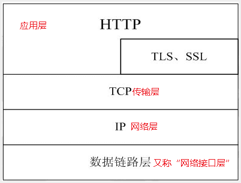
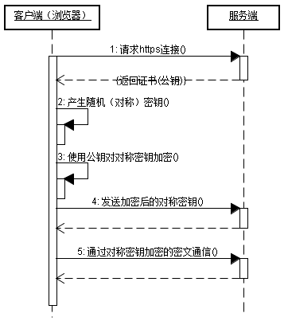

http
Http 中文全称：超文本传输协议
HTTP是一个应用层协议，由请求和响应构成，是一个标准的客户端服务器模型。HTTP是一个无状态的协议。
HTTP模型：

HTTP默认的端口号为80，HTTPS的端口号为443。
GET和POST区别
GET主要是用来请求数据的，向特定的资源发出请求而POST主要用于提交数据
GET也可以用来提交数据。GET方式提交数据，会带来安全问题，比如一个登录页面，通过GET方式提交数据时，用户名和密码将出现在URL上，如果页面可以被缓存或者其他人可以访问这台机器，就可以从历史记录获得该用户的账号和密码。
GET提交的数据会放在URL之后，以?分割URL和传输数据，参数之间以&相连，如EditPosts.aspx?name=test1&id=123456. POST方法是把提交的数据放在HTTP包的Body中,即下图的请求数据中
GET提交的数据大小有限制，最多只能有1024字节（因为浏览器对URL的长度有限制），而POST方法提交的数据没有限制。
GET方式需要使用Request.QueryString来取得变量的值，而POST方式通过Request.Form来获取变量的值。
HTTP请求格式
HTTP请求报文格式如下：

GET请求报文如下：
1 | GET /search?hl=zh-CN&source=hp&q=domety&aq=f&oq= HTTP/1.1 |
可以看到，GET方式的请求一般不包含”请求内容”部分，请求数据以地址的形式表现在请求行。
显然，这种方式不适合传送私密数据。另外，由于不同的浏览器对地址的字符限制也有所不同，一般最多只能识别1024个字符，所以如果需要传送大量数据的时候，也不适合使用GET方式。
对于上面提到的不适合使用GET方式的情况，可以考虑使用POST方式，因为使用POST方法可以允许客户端给服务器提供信息较多。POST方法将请求参数封装在HTTP请求数据中，以名称/值的形式出现，可以传输大量数据，这样POST方式对传送的数据大小没有限制，而且也不会显示在URL中。
Post请求报文格式：

可以看到，POST方式请求行中不包含数据字符串，这些数据保存在”请求内容”部分，各数据之间也是使用”&”符号隔开。POST方式大多用于页面的表单中。因为POST也能完成GET的功能，因此多数人在设计表单的时候一律都使用POST方式，其实这是一个误区。GET方式也有自己的特点和优势，我们应该根据不同的情况来选择是使用GET还是使用POST。
既然POST也能实现GET的功能，而且又有显著优势，GET的优势在哪呢？
GET和POST最全的区别
- post更安全（不会作为url的一部分，不会被缓存、保存在服务器日志、以及浏览器浏览记录中）
- post发送的数据更大（get有url长度限制）
- post能发送更多的数据类型（get只能发送ASCII字符）
- post用于修改和写入数据，get一般用于搜索排序和筛选之类的操作（淘宝，支付宝的搜索查询都是get提交），目的是资源的获取，读取数据
- post比get慢
为什么POST比GET慢？
- post请求包含更多的请求头 ：因为post需要在请求的body部分包含数据，所以会多了几个数据描述部分的首部字段（如：content-type）,这其实是微乎其微的。
- 最重要的一条，post在真正接收数据之前会先将请求头发送给服务器进行确认，然后才真正发送数据
- get会将数据缓存起来，而post不会
- post不能进行管道化传输
post请求的过程：
- 浏览器请求tcp连接（第一次握手
- 服务器答应进行tcp连接（第二次握手）
- 浏览器确认，并发送post请求头（第三次握手，这个报文比较小，所以http会在此时进行第一次数据发送）
- 服务器返回100 Continue响应
- 浏览器发送数据
- 服务器返回200 OK响应
GET请求过程：
- 浏览器请求tcp连接（第一次握手）
- 服务器答应进行tcp连接（第二次握手）
- 浏览器确认，并发送get请求头和数据（第三次握手，这个报文比较小，所以http会在此时进行第一次数据发送）
- 服务器返回200 OK响应
HTTP应用
- 断点续传的实现原理
- 多线程下载的原理
都是因为GET请求的Range请求头可以规定请求的资源范围。
HTTPS传输协议原理
HTTPS（全称：Hypertext Transfer Protocolover Secure Socket Layer），是以安全为目标的HTTP通道，简单讲是HTTP的安全版。即HTTP下加入SSL层，HTTPS的安全基础是SSL，因此加密的详细内容请看SSL。
两种基本的加解密算法类型
对称加密：密钥只有一个，加密解密为同一个密码，且加解密速度快，典型的对称加密算法有DES、AES等。
非对称加密：密钥成对出现（且根据公钥无法推知私钥，根据私钥也无法推知公钥），加密解密使用不同密钥（发送方使用对方的公钥进行加密处理，对方收到加密的信息后，再使用自己的私有密钥进行解密），相对对称加密速度较慢，典型的非对称加密算法有RSA、DSA等。
HTTPS采用混合加密机制
在秘钥交换阶段使用非对称加密，在报文传输阶段使用共享秘钥加密。
HTTPS通信过程

HTTPS通信的优点
- 客户端产生的密钥只有客户端和服务器端能得到
- 加密的数据只有客户端和服务器端才能得到明文
- 客户端和服务端的通信是安全的
http的状态响应码
1(信息类)：表示接收到请求并且继续处理
100——客户必须继续发出请求
101——客户要求服务器根据请求转换HTTP协议版本
2(响应成功)：表示动作被成功接收、理解和接受
200——表明该请求被成功地完成，所请求的资源发送回客户端
201——提示知道新文件的URL
202——接受和处理、但处理未完成
3(重定向类)：为了完成指定的动作，必须接受进一步处理
300——请求的资源可在多处得到
301——本网页被永久性转移到另一个URL
4(客户端错误类)：请求包含错误语法或不能正确执行
400——客户端请求有语法错误，不能被服务器所理解
404——一个404错误表明可连接服务器，但服务器无法取得所请求的网页，请求资源不存在。eg：输入了错误的URL
5(服务端错误类)：服务器不能正确执行一个正确的请求